HYY Home
|
Hao-Yang Yen

Experience
|

Learning
|
Research
|

Explore
|
SIR Model In Different Forms
I worked on project with 賀子齊 in 2023 spring.
Abstract
A simple differential equation used to describe virus spread in space, S represent susceptibility, I represent infectious, and R represent recover, α and γ are infectious and recovery rate.
\(\displaystyle\frac{dS}{dt}=-\alpha S I\)
\(\displaystyle\frac{dI}{dt}=\alpha S I-\gamma I\)
\(\displaystyle\frac{dR}{dt}=\gamma I\)
These relations are described by a differential equations system. Definitely, we can employ
numerous kinds of numerical method to sovle these differentional equations. We can get the result like:
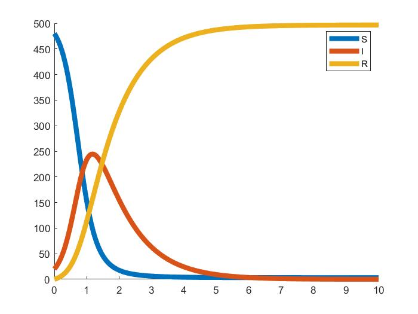
A well-known numerical result of the SIR model.
There are only three variables considered in this model. One can consider more variables to make the model more complete, for example, the \(SEIR\) model is a kind of model with the varivle "exposed"(\(E\)) consideres. However, the more variables are considered, the more complex the model is.
The algorithm used to solve the differential equations would become more complex, too. To avoid solveing these complex equations.
We use the Monte Carlo method to simulate equation, it can well improve the simulate of multiple differential equation and show straightforward result.
Modeling
To model these equations in the probability form, we have the following assumptons
-
All parameter in the model do not change with time.
-
All individulas distribute in the space uniformly.
-
All individulas does not move.
-
All individulas has the same probability to be infected.
Then we can view the individuals as lattices in the space. Thus, the differential equations model changes to the probability model as the figur demonstrating.
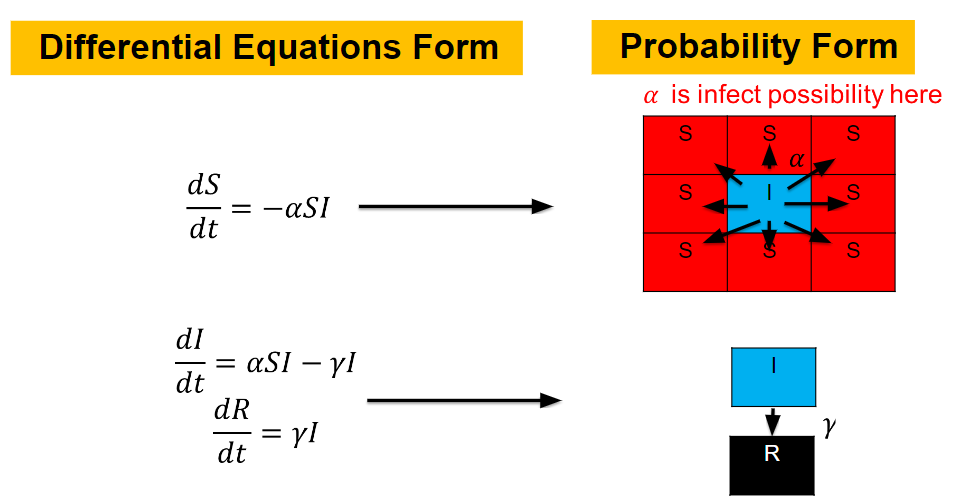
The \(S\) lattice spreads to the nearest lattices with probability corresponding to \(\alpha\) and
\(I\) lattice changes to the \(R\) lattice with probability corresponding to \(\gamma\).
This model can be easily generalized to other models.
SIR Model
We first simulate the simplest epidamic model \(SIR\) model first.
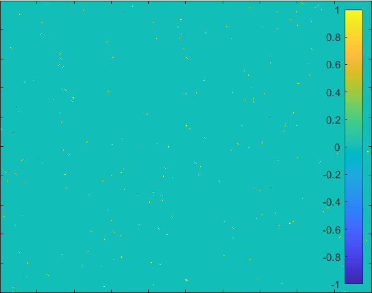
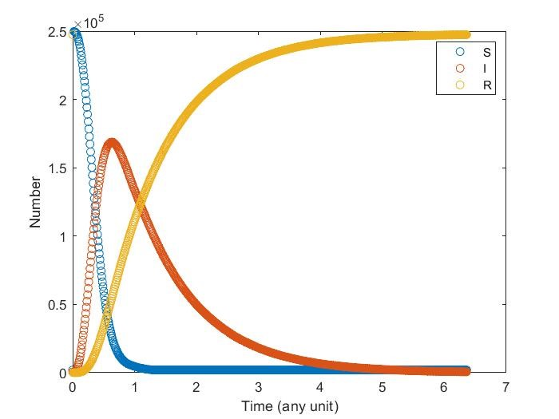
Diffusion in 2-D Space (\(S=0,E=1,I=2,R=-1,Q=-2\)) and the corresponding number of individuals.
We can see that the result is similar to that computed by solving differential equations.
Comparison of numerical results of differential equations and Monte Carlo methid.
SIR+Q Model
Adding quarantine term, now infectious may get quarantine and cannot contagious susceptibility With different quarantine strength it may affect the result differently.
Note that \(I\) may get recovery directly instead go to quarantine.
\(\displaystyle\frac{dS}{dt}=-\alpha S I\)
\(\displaystyle\frac{dI}{dt}=\alpha S I-\gamma I-\delta I\)
\(\displaystyle\frac{dQ}{dt}=\delta I-\omega Q\)
\(\displaystyle\frac{dR}{dt}=\gamma I+\delta I+\omega Q\)
-
The model having smaller probability to change form \(I\) to \(Q\).
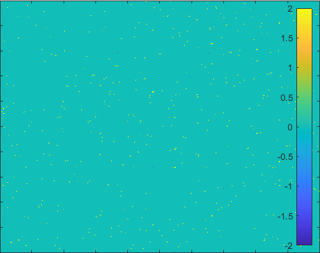
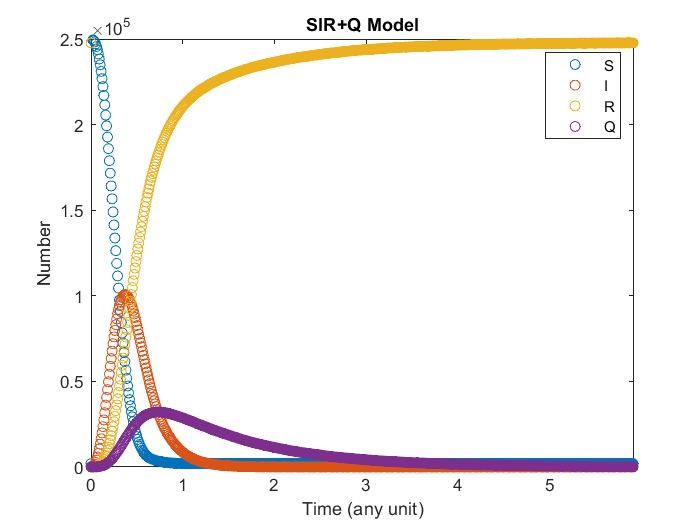
Diffusion in 2-D Space (\(S=0,I=2,R=-1,Q=-2 \)) and the corresponding number of individuals.
-
The model having larger probability to change form \(I\) to \(Q\).
 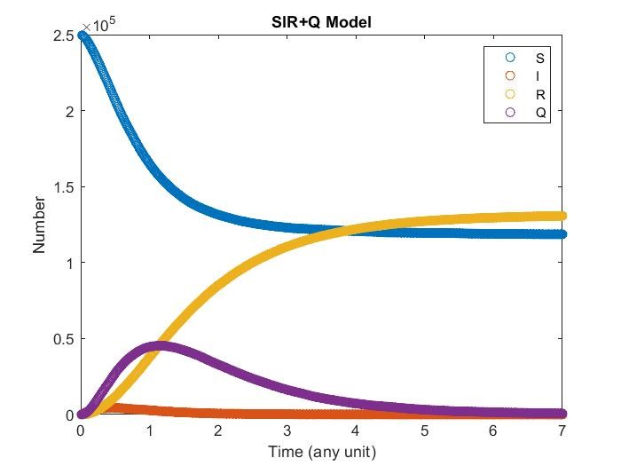
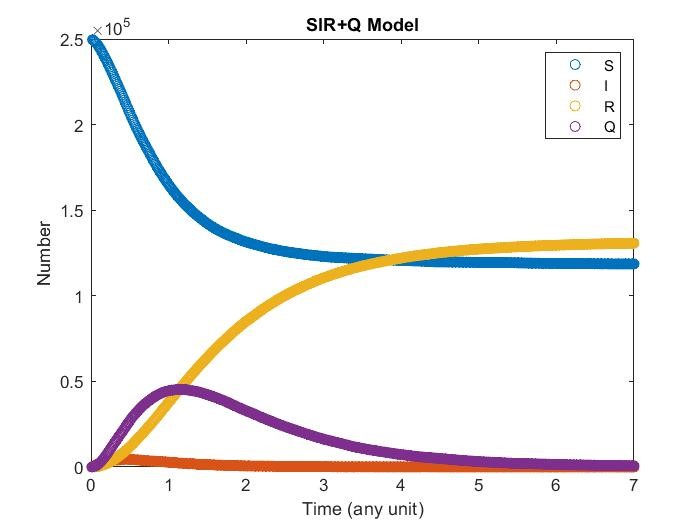
Diffusion in 2-D Space (\(S=0,I=2,R=-1,Q=-2 \)) and the corresponding number of individuals.
SEIR+Q Model
Adding expose term, now susceptibility will convert to expose first, then go to infectious. In expose, it can still affect susceptibility and won’t be target as quarantine.
\(\displaystyle\frac{dS}{dt}=-\alpha S E-\tau SI\)
\(\displaystyle\frac{dE}{dt}=\alpha S E+\tau SI-\beta E\)
\(\displaystyle\frac{dI}{dt}=\beta E-\gamma I-\delta I\)
\(\displaystyle\frac{dQ}{dt}=\delta I-\omega Q\)
\(\displaystyle\frac{dR}{dt}=\gamma I+\delta I+\omega Q\)
-
The model having smaller probability to change form \(I\) to \(Q\).
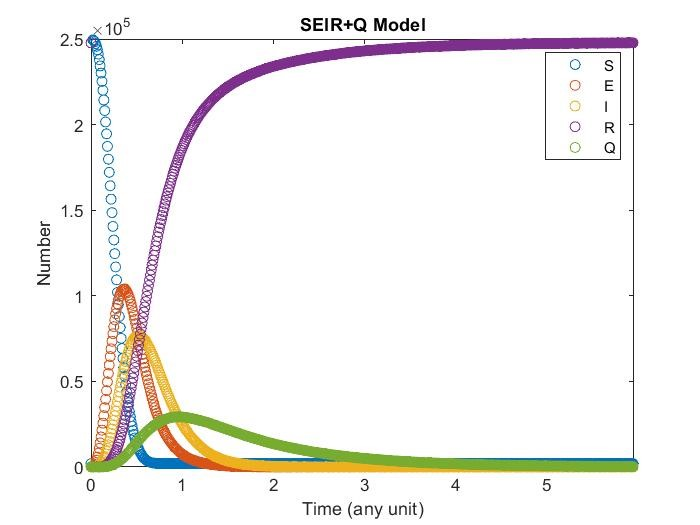
Diffusion in 2-D Space (\(S=0,E=1,I=2,R=-1,Q=-2\)) and the corresponding number of individuals.
SEIRS+Q Model
Finally consider now recover may have chances to get contagious only their anti-body decrease to certain value, we can let remove get back to susceptibility.
\(\displaystyle\frac{dS}{dt}=-\alpha S E-\tau SI+\mu R\)
\(\displaystyle\frac{dE}{dt}=\alpha S E+\tau SI-\beta E\)
\(\displaystyle\frac{dI}{dt}=\beta E-\gamma I-\delta I\)
\(\displaystyle\frac{dQ}{dt}=\delta I-\omega Q\)
\(\displaystyle\frac{dR}{dt}=\gamma I+\delta I+\omega Q-\mu R\)
-
The model having smaller probability to change form \(I\) to \(Q\).
 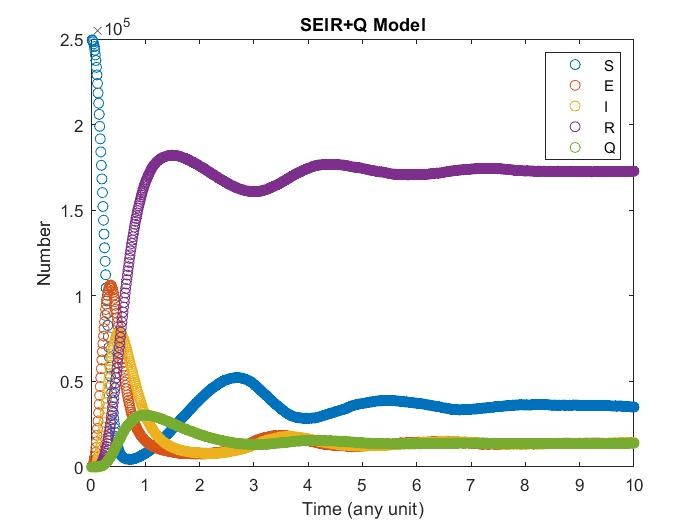
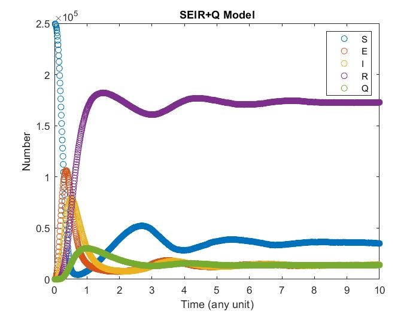
Diffusion in 2-D Space (\(S=0,E=1,I=2,R=-1,Q=-2\)) and the corresponding number of individuals.
-
The model having larger probability to change form \(I\) to \(Q\).
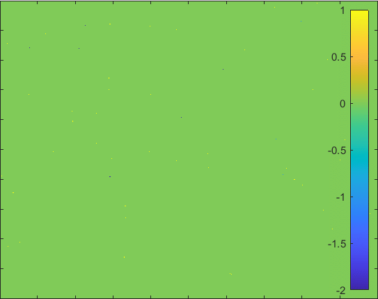
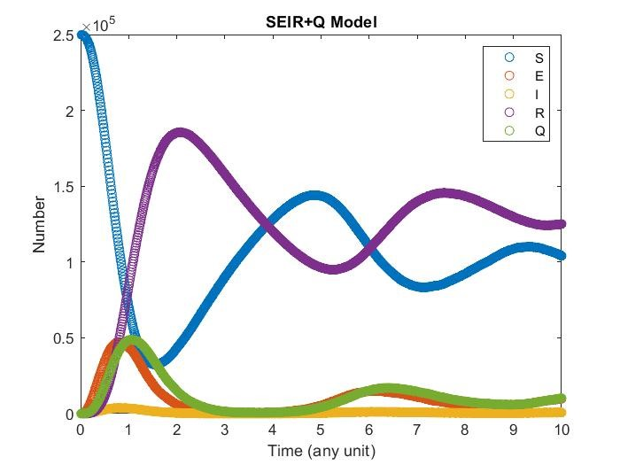
Diffusion in 2-D Space (\(S=0,E=1,I=2,R=-1,Q=-2\)) and the corresponding number of individuals.
Camparison
Here we plot everyday who got virus of our simulation with actual data in taiwan, unfortunately the they delete all data in the previous part of epidemic, but we can still see the plot looks similar. The most difference is that the some part of our simulation, they would be no people got virus, whereas in reality everyday people would get virus. In simulation everyone will get virus at first outbreak, whereas in reality aren’t. lso, there are too many factor in reality and may not be well to quantify.


Diffusion in 2-D Space (\(S=0,E=1,I=2,R=-1,Q=-2\)) and the corresponding number of individuals compare with the real data in Taiwan.
Conclusion
-
High quarantine is very important in the outbreak if there are no significant expose term.
-
Expose will decrease the important of quarantine.
-
With remove may change back to susceptibility, there
would have periodic action of the infectious.
-
By adding these different factor we can estimate the epidemic roughly.